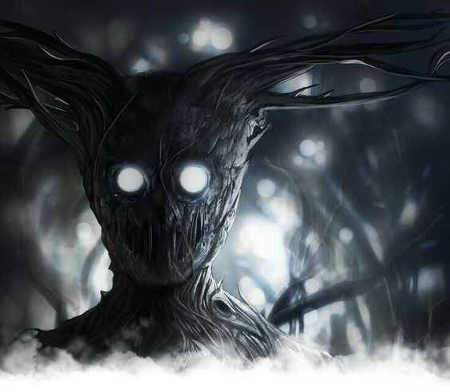

Ga'ar
Divinité :
Ga'ar, l'entité du Néant, le Némésis des Dieux et Dévoreur du soleil. Un regard détourné le fit pénétrer dans les origines de la vie et annihiler tous les êtres divins, sauf un, un jeune dieu nommé Ysiiri qui fit l'Yndrill et dont l'œil devint le soleil. Ga'ar, expression du Vide, est plus déterminé que jamais à avaler le soleil, passant pour cela par chaque pan de l'Yndrill. Son objectif reste et restera de replonger le monde dans les conditions de son origine, à l'époque où le Temps n'était pas et où rien n'était.
Peuples croyants :
- Dokkalfar
- Loups-garous
- Vampires
- Démons
- Morts-vivants
- Corrompus
Fêtes religieuses :
Le culte du Vide ne témoigne d'aucune forme de festivité.
Dogmes :
- L'arbre-monde a été formé par l'âme des Dieux ancestraux.
- L'œil d'Ysiiri est le soleil. Par logique, Ysiiri existe donc.
- Le soleil doit être éteint et Ysiiri tué pour faire revenir le monde aux ténèbres de ses origines.
- L'arbre-monde doit être purgé, ne doit même pas exister.
- Les serviteurs de Ga'ar, après sa victoire, vivront dans les Miasmes-du-Néant, à ses côtés, loin des hérétiques et découvriront la pureté brute du Vide.
Culte :
- Chaque peuple croyant a sa façon de porter culte à Ga'ar. Si les prières de vengeance sont courantes et tournées en direction de la Tour Zatvor, les sacrifices humains et actes de tortures le sont tout autant.
- Le mal est un concept inexistant pour les adorateurs du Néant, propager le sang pour la gloire de Ga'ar et la perte d'Ysiiri est un acte de justesse envers le cosmos fertilisé par des dieux avares d'espace. Ainsi, tant que les actes de culte œuvrent pour l'entité, alors cette dernière s'en complaît.
Lieu de culte :
- Autels sacrificiels, pied de la Tour Zatvor.